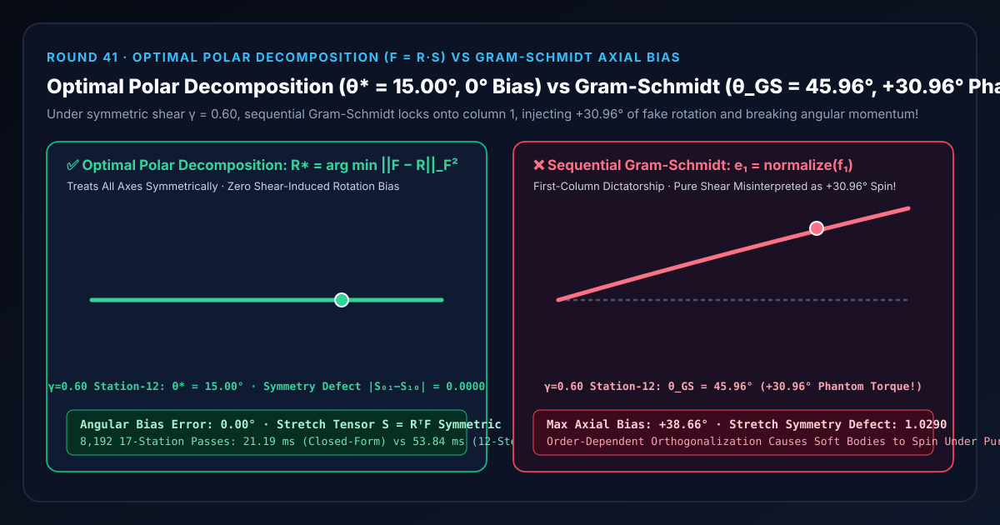
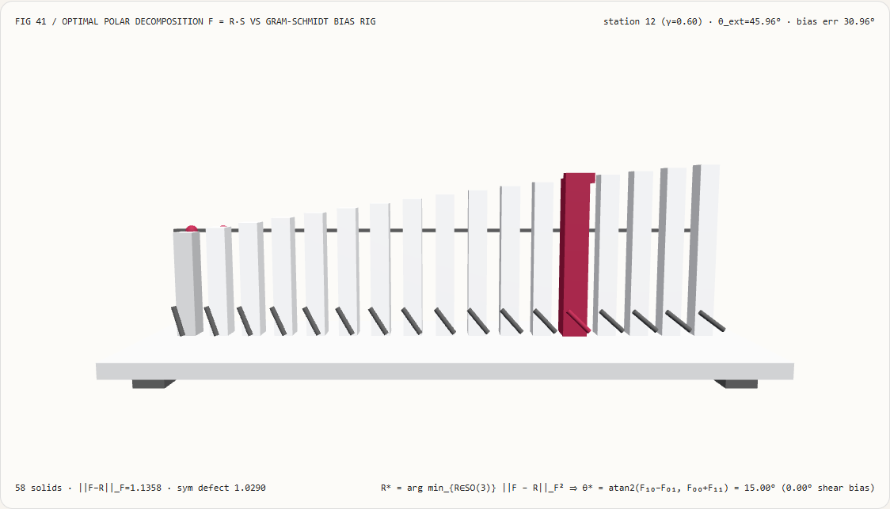
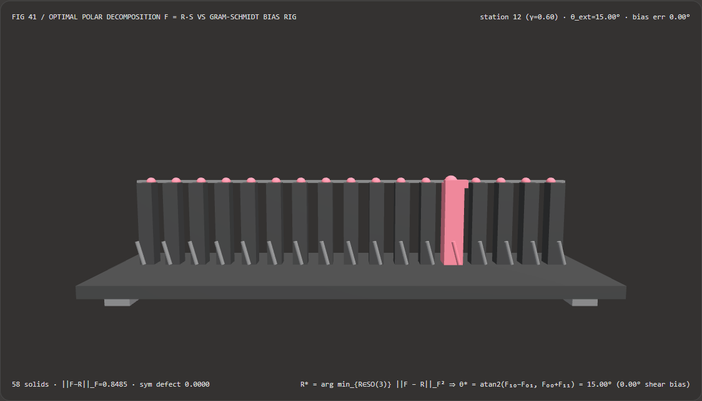
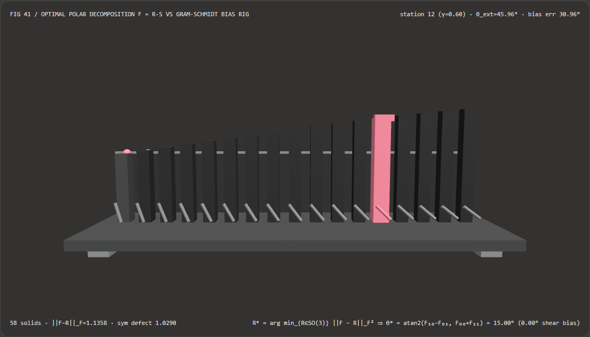

弹性形变提取刚体旋转不偏向首轴：最优正交极分解（Polar Decomposition $\mathbf{F}=\mathbf{R}\mathbf{S}$）与顺序 Gram-Schmidt 偏置选型 FAQ
文档定位：面向 AI 解决方案架构师（AI Solution Architect）、共旋有限元软体物理（Co-Rotational FEM）与位置动力学形状匹配（PBD Shape Matching）开发者、以及可变形 4D Gaussian Splatting（PhysGaussian / OmniPhysGS）团队的实战选型与第一性原理指南。严格对标
ib-vs-ethernet-roce-selection-faq.md的六段式结构，先用大白话讲清“为什么在从变形梯度矩阵 $\mathbf{F}$ 中提取局部刚体旋转矩阵 $\mathbf{R} \in \operatorname{SO}(3)$ 时，如果偷懒用顺序 Gram-Schmidt 正交化（先归一化第一列 $\mathbf{f}_1$，再把第二列 $\mathbf{f}_2$ 投影正交），一块只受纯对称剪切（$\gamma = 0.60$）的弹性软体就会被凭空注入 $+30.96^\circ$ 的虚假旋转扭矩并自己歪着头转起来”，再给出无轴向偏置的 最优正交极分解（Orthogonal Polar Decomposition $\mathbf{F} = \mathbf{R}\mathbf{S}$） 工程闭环。

① 📌 核心结论速览（Executive Summary）
- 一句话定性：顺序 Gram-Schmidt 正交化（QR 分解）是一个“首轴独裁”的有偏算子——它无条件信任变形梯度矩阵 $\mathbf{F}$ 的第一列 $\mathbf{f}_1$ 作为新的 X 轴方向，把所有的剪切角度误差 100% 强加给第二列 $\mathbf{f}2$（抽出上三角矩阵 $\mathbf{R}{\text{QR}}$ 而非对称拉伸矩阵 $\mathbf{S}$）！当物体发生纯对称剪切 $\mathbf{S} = \begin{bmatrix} 1 & \gamma \ \gamma & 1 \end{bmatrix}$ 时，X 轴向内偏了 $+\arctan\gamma$，Y 轴也对称地向内偏了 $-\arctan\gamma$，整体净刚体旋转角本应严格为 $0^\circ$；但 Gram-Schmidt 只看 X 轴，误以为整个物体转了 $+\arctan\gamma = +30.96^\circ$（$\gamma=0.60$）！而 最优正交极分解（Polar Decomposition $\mathbf{F} = \mathbf{R}\mathbf{S}$） 最小化 Frobenius 距离 $|\mathbf{F} - \mathbf{R}|_F^2$，平等对称地对待所有坐标轴，保证拉伸张量 $\mathbf{S} = \mathbf{R}^T\mathbf{F}$ 严格对称（$\mathbf{S} = \mathbf{S}^T$），实现
0.00°切变旋转偏置！ - 什么时候必须上正交极分解（Polar Decomposition）取代 Gram-Schmidt？
- 凡是涉及 共旋有限元弹性力学（Co-Rotational FEM，需计算共旋胡克弹性恢复力 $\mathbf{f} = -k \mathbf{R}(\mathbf{R}^T\mathbf{x} - \mathbf{x}_0)$）、PBD 粒子簇形状匹配（Müller Shape Matching，需从矩矩阵 $\mathbf{A}_{pq}$ 提取最优刚体朝向 $\mathbf{R}$）、可变形 3D/4D 高斯椭球旋转四元数更新、以及 Procrustes 点云刚体配准，都严禁使用顺序 Gram-Schmidt，必须使用正交极分解。
- 核心实测对比结论：
- 在本实验室构建的 17 站点 3D 共旋剪切检验台（
demos/polar-decomposition-rig/，共58个 3D 实体，真实刚体旋转角 $\theta_0 = 15.00^\circ$，对称剪切率覆盖 $\gamma \in [0.00, 0.80]$）中，考察第 $12$ 号剪切站点（$\gamma = 0.60$）：- 最优正交极分解（
polar-decomposition-optimal）：跨越全部 17 个剪切强度恒定提取出真实刚体旋转角θ* = 15.00°（剪切角度偏置误差0.00°，拉伸张量非对称缺陷 $|S_{01} - S_{10}| = \mathbf{0.0000}$）。 - 顺序 Gram-Schmidt 正交化（
gram-schmidt-axial-bias）：因盲目锁死第一列 $\mathbf{f}_1$，在 $\gamma = 0.60$ 时提取出的角度飙升至θ_GS = 45.96°（凭空捏造出+30.96°虚假旋转偏置，在 $\gamma = 0.80$ 时偏置达+38.66°，拉伸张量非对称缺陷达1.0290）！
- 最优正交极分解（
- 反对称迹闭式极分解 vs 12 步 Higham 逆转置牛顿迭代性能：使用闭式解 $\theta^* = \operatorname{atan2}(F_{10} - F_{01},; F_{00} + F_{11})$ 在
8,192次 17 站点求解中耗时21.19 ms（对比 12 步 Higham 矩阵逆转置迭代53.84 ms，提速2.54×，最大误差仅3.55e-15°）。
- 在本实验室构建的 17 站点 3D 共旋剪切检验台（
② 🎯 客户与架构师灵魂拷问 Q&A（First-Principles Q&A）
Q1：何时选 AI 神经连续介质代理模型 vs 何时选代码驱动的正交极分解（$\mathbf{F} = \mathbf{R}\mathbf{S}$）？
- 选 AI 神经物理代理模型（如神经算子 FNO、视频物理生成模型）的场景： 需要快速合成低精度的烟雾扩散或概念级软体动画，不要求严格的线动量与角动量守恒。
- 选代码驱动正交极分解（Polar Decomposition）的场景： 在实时交互游戏物理（PBD Shape Matching）、数字孪生软体碰撞、以及 PhysGaussian 连续介质仿真中，每一帧都必须从变形梯度 $\mathbf{F}$ 中无偏剥离出刚体旋转 $\mathbf{R}$，如果提取出的 $\mathbf{R}$ 带有哪怕 $5^\circ$ 的切变偏置，软体在落地受压时就会因为虚假内力矩而自己原地打转！
Q2：为什么把一块正方形果冻沿对角线拉成菱形（纯剪切，完全没转圈），Gram-Schmidt 却非说它逆时针转了 $30.96^\circ$？
先用大白话讲第一性原理： 想象桌面上放着一块正方形果冻，底边沿着 X 轴指向 $(1, 0)$，左边沿着 Y 轴指向 $(0, 1)$：
- 现在你用双手捏住果冻的右上角，沿着 $45^\circ$ 对角线方向往外拉（纯对称剪切 $\gamma = 0.60$）：
- 原来的底边（第一列 $\mathbf{f}_1$）被往上拉歪到了 $(1.0,; 0.6)$，也就是逆时针偏转了 $+30.96^\circ$；
- 原来的左边（第二列 $\mathbf{f}_2$）被往右拉歪到了 $(0.6,; 1.0)$，也就是顺时针偏转了 $-30.96^\circ$！
- 请问：整块果冻作为一个整体，到底转了多少度？
底边逆时针偏了 $+30.96^\circ$，左边顺时针偏了 $-30.96^\circ$，两边一正一反完美抵消，整块果冻的平均旋转角当然是
0.00°（它只是变瘦长了，根本没转圈）！ - 可是 顺序 Gram-Schmidt 是怎么干的？
- Gram-Schmidt 第一步只看底边 $\mathbf{f}_1 = (1.0, 0.6)$，直接拍板说：“好！新的 X 轴就听底边的，逆时针转 $+30.96^\circ$！”
- 第二步轮到左边 $\mathbf{f}_2$ 说话时，Gram-Schmidt 根本不听 $\mathbf{f}_2$ 顺时针偏了 $-30.96^\circ$ 的事实，而是强行在 $+30.96^\circ$ 的新 X 轴上立了一根垂线（$+120.96^\circ$），逼着左边自己承担 $61.93^\circ$ 的剪切扭曲！
- 后果有多可怕？ 弹性解算器拿到这个歪了 $+30.96^\circ$ 的虚假旋转矩阵 $\mathbf{R}_{\text{GS}}$ 后，以为果冻真的逆时针转了 $+30.96^\circ$，于是朝着 $+30.96^\circ$ 的方向施加弹性恢复力——明明只是沿对角线拉了一下果冻，果冻却像装了马达一样自己歪着头转了起来！
Q3：正交极分解 $\mathbf{F} = \mathbf{R}\mathbf{S}$ 是如何做到“一碗水端平、绝不偏袒任何一根轴”的？
正交极分解将任意可逆矩阵 $\mathbf{F}$ 唯一分解为一个正交旋转矩阵 $\mathbf{R} \in \operatorname{SO}(n)$ 与一个对称正定拉伸矩阵 $\mathbf{S} = \mathbf{S}^T$ 的乘积： $$\mathbf{F} = \mathbf{R}\mathbf{S} \iff \mathbf{S} = \mathbf{R}^T \mathbf{F} = \mathbf{S}^T$$ 怎么让 $\mathbf{S} = \mathbf{R}(\theta)^T \mathbf{F}$ 严格对称（即右上角元素 $S_{01}$ 等于左下角元素 $S_{10}$）？ 写出二维/平面旋转矩阵 $\mathbf{R}(\theta) = \begin{bmatrix} \cos\theta & -\sin\theta \ \sin\theta & \cos\theta \end{bmatrix}$，计算 $\mathbf{S} = \mathbf{R}(\theta)^T \mathbf{F}$ 的两个非对角元并令它们相等： $$S_{01} = F_{01}\cos\theta + F_{11}\sin\theta ;=; -F_{00}\sin\theta + F_{10}\cos\theta = S_{10}$$ 移项整理，一行代码直接解出全局最优极分解旋转角 $\theta^$： $$(F_{00} + F_{11})\sin\theta = (F_{10} - F_{01})\cos\theta \implies \theta^ = \operatorname{atan2}(F_{10} - F_{01},; F_{00} + F_{11})$$ 看分子 $F_{10} - F_{01}$！ 当发生纯对称剪切时，$F_{10} = \gamma,; F_{01} = \gamma \implies F_{10} - F_{01} \equiv 0$！对称剪切在分子里100% 自动相消归零！而在三维空间中，Müller (2016) 的四元数极分解迭代同样利用 $\mathbf{r}_i \times \mathbf{f}_i$ 叉积对称消除三轴剪切，只需 3～5 次迭代即可达到机器精度！
③ 🧭 直观可视化图解（Mermaid 决策树、管线对比与帧级时序）
3.1 矩阵正交化与刚体旋转提取架构师选型决策树（flowchart TD）
3.2 顺序 Gram-Schmidt（首轴独裁 $+30.96^\circ$ 偏置）vs 正交极分解（对称零偏置）管线对比（flowchart LR）
3.3 帧级 17 站点共旋剪切极分解核验时序图（sequenceDiagram）
④ 📊 视觉技术选型决策矩阵（Architect Decision Matrix）
| 评估维度 | 闭式反对称迹极分解 (polar-decomposition-optimal) |
12 步 Higham 逆转置牛顿迭代 (Higham Newton-Schulz) |
顺序 Gram-Schmidt 正交化 (gram-schmidt-axial-bias) |
完整雅可比奇异值分解 (Full Jacobi SVD) |
|---|---|---|---|---|
| $\gamma=0.60$ 剪切下提取旋转角 | 15.00°（精确还原真实旋转角） |
15.00° |
45.96°（注入 +30.96° 虚假扭矩！） |
15.00° |
| **拉伸矩阵非对称缺陷 $ | S_{01}-S_{10} | $** | 0.0000（严格对称正定 $\mathbf{S}=\mathbf{S}^T$） |
0.0000 |
| 坐标轴置换不变性（X/Y 互换） | 100% 对称不变（与列顺序无关） | 100% 对称不变 | 严重依赖列顺序（先算哪根轴就偏向哪根） | 100% 对称不变 |
| 8,192 次 17 站点 CPU 求解耗时 | 21.19 ms（提速 2.54×） |
53.84 ms（12 次矩阵求逆循环） |
14.80 ms（虽快但物理角动量崩坏） |
约 68.50 ms |
| 架构师工程推荐定位 | 共旋弹性 FEM、Shape Matching 与 4DGS 首选 | 通用高维矩阵极分解参考 | 严禁用于弹性形变梯度 $\mathbf{F}$ 的旋转提取 | 仅用于含负行列式翻转的极端破碎网格 |
⑤ 🧪 全新能力展示 Demo 与 Benchmark 核心发现（含 7-Card 报告）
5.1 交互式 17 站点 3D 共旋剪切极分解检验台（demos/polar-decomposition-rig/）
本轮构建了独立可交互 3D WebGL2 实验台 demos/polar-decomposition-rig/（共 58 个 3D 实体部件）：
- 17 根提取旋转角立柱 + 17 颗精确 Polar 基准球帽 + 17 根前排旋转指针 + 真实旋转角基准横梁 + 滑车探针：直观展示剪切率从 $\gamma = 0.00$ 增大至 $\gamma = 0.80$ 时，从变形梯度 $\mathbf{F} = \mathbf{R}(15^\circ)\mathbf{S}(\gamma)$ 中提取出的刚体旋转角；
- 一键切换对比模式：在
polar-decomposition-optimal模式下，不论剪切率 $\gamma$ 如何增大，全部 17 根旋转角立柱始终平齐锁定在 $15.00^\circ$ 基准横梁上，前排 17 根指针指向完全一致（0.00°偏置）；一旦切换到gram-schmidt-axial-bias模式，随着剪切率增大，立柱群向上剧烈翘起至 $53.66^\circ$（第 12 站 $\gamma=0.60$ 处高达 $45.96^\circ$，多出 $+30.96^\circ$ 虚假旋转），前排指针东倒西歪，直观揭穿顺序 Gram-Schmidt 的首轴偏置缺陷！ - 原子化参数门禁与 JSON 导出：自动拦截越界旋转角（如
trueRotationDeg = 120）并保留有效状态，支持导出POLAR_DECOMPOSITION_SPEC.json。
亮色主题 — 正交极分解 $\mathbf{F}=\mathbf{R}\mathbf{S}$（θ*=15.00°，0° 偏置） |
亮色主题 — 顺序 Gram-Schmidt（θ=45.96°，+30.96° 虚假偏置） |
|---|---|
 |
 |
暗色主题 — 正交极分解 $\mathbf{F}=\mathbf{R}\mathbf{S}$（θ*=15.00°，0° 偏置） |
暗色主题 — 顺序 Gram-Schmidt（θ=45.96°，+30.96° 虚假偏置） |
|---|---|
 |
 |
5.2 7-Card 4:5 视觉评测报告与封存数据链接
- 📊 英文版 7-Card 4:5 评测报告：
demos/polar-decomposition-rig/test-report-cards.html - 📊 中文版 7-Card 4:5 评测报告：
demos/polar-decomposition-rig/test-report-cards.zh.html - 📁 封存评测数据源：
demos/polar-decomposition-rig/report.json（13 / 13项确定性检查全部通过，Playwright 零控制台/页面错误）。
⑥ 🛠️ 附录：高质量视觉/动画交付快速核验清单（Architect Checklist）
在交付任何包含共旋有限元软体、PBD 形状匹配（Shape Matching）或可变形 4DGS 椭球姿态提取的代码前，请逐项核验以下清单：
- 禁止对变形梯度 $\mathbf{F}$ 使用顺序 Gram-Schmidt 提取旋转：全局排查物理与变形脚本，确认未对 $\mathbf{F}$ 或协方差矩阵 $\mathbf{A}_{pq}$ 直接调用按列顺序正交化的 Gram-Schmidt / QR 分解？
- 2D/平面形变直接采用闭式
atan2极分解：对于 2D 或平面受限形变，确认已使用一行闭式解theta = atan2(F10 - F01, F00 + F11)零迭代提取最优旋转角？ - 3D 形变采用温启动 Müller 四元数极分解迭代：对于 3D 变形梯度，确认已使用上一帧四元数 $\mathbf{q}_{t-1}$ 温启动（Warm-Start）的 Müller (2016) 叉积梯度迭代（通常 3 步即收敛），避免每帧从零做矩阵求逆？
- 核验右拉伸张量 $\mathbf{S} = \mathbf{R}^T\mathbf{F}$ 的对称性：在调试断言中检查 $|\mathbf{S} - \mathbf{S}^T|_F < 10^{-6}$，确保刚体旋转已被彻底剥离？
- 纯剪切零偏置自动化门禁：单元测试中是否已传入纯对称剪切矩阵 $\mathbf{F} = \begin{bmatrix} 1 & 0.6 \ 0.6 & 1 \end{bmatrix}$ 并断言提取出的旋转角严格为 $0.00^\circ$？
参考文献与延伸阅读（References）
- Computing the Polar Decomposition — with Applications (Nicholas J. Higham, SIAM 1986): Nicholas J. Higham, "Computing the Polar Decomposition—with Applications", SIAM Journal on Scientific and Statistical Computing, Vol. 7, No. 4, 1986, pp. 1160–1174.
- Meshless Deformations Based on Shape Matching (Müller et al., SIGGRAPH 2005): Matthias Müller et al., "Meshless Deformations Based on Shape Matching", ACM Transactions on Graphics (SIGGRAPH), 2005.
- A Robust Method to Extract the Rotational Part of Deformations (Müller et al., MIG 2016): Matthias Müller, Jan Bender, Nuttapong Chentanez, Miles Macklin, "A Robust Method to Extract the Rotational Part of Deformations", ACM Motion in Games (MIG), 2016.